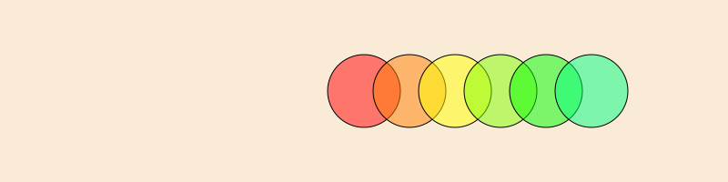
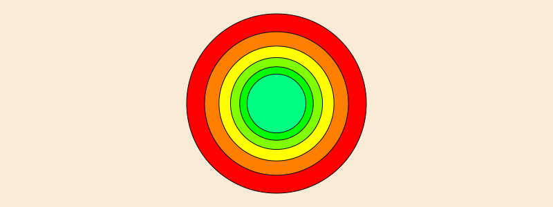
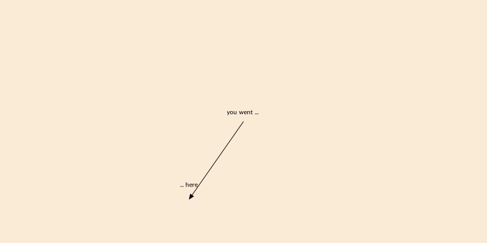
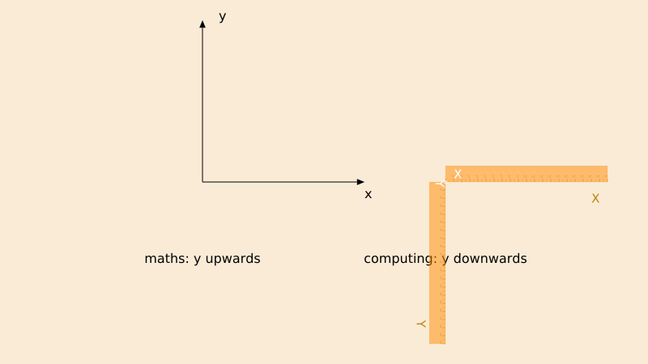
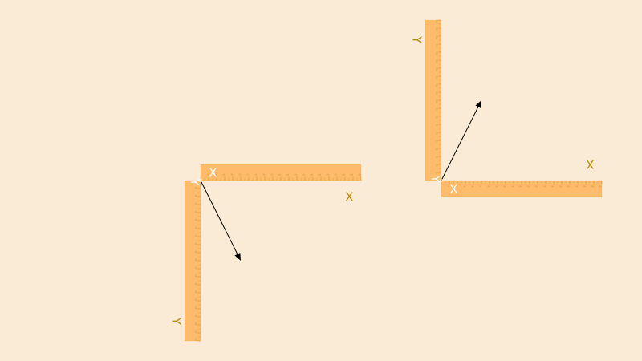

Transforms and matrices
Graphics are placed on the current drawing according to the current transformation matrix. You can either modify this indirectly, using functions, or set the matrix directly.
For basic transformations, use translate(tx, ty), scale(sx, sy), and rotate(a).
Translation
translate(pos) (and translate(x, y)) shift the current origin to pos or by the specified amounts in x and y. It's relative and cumulative, rather than absolute:
for i in range(0, step=30, length=6) sethue(HSV(i, 1, 1)) # from Colors setopacity(0.5) circle(Point(0, 0), 40, :fillpreserve) setcolor("black") strokepath() translate(50, 0)end
Scaling
scale(x, y) and scale(n) scale the current workspace by the specified amounts. It's relative to the current scale, not to the drawing's original.
origin()for i in range(0, step=30, length=6) sethue(HSV(i, 1, 1)) # from Colors circle(Point(0, 0), 130, :fillpreserve) setcolor("black") strokepath() scale(0.8)end
Rotation
rotate rotates the current workspace by the specified amount about the current 0/0 point. It's relative to the previous rotation - "rotate by".
origin()for i in 1:8 randomhue() squircle(Point(40, 0), 20, 30, :fillpreserve) sethue("black") strokepath() rotate(π/4)endorigin resets the matrix then moves the origin to the center of the page.
Use the getscale, gettranslation, and getrotation functions to find the current values.
To quickly return home after many changes, you can use setmatrix([1, 0, 0, 1, 0, 0]) to reset the matrix to the default.
Scaling of line thickness
Line thicknesses are not scaled by default. For example, with a current line thickness set by setline(1), lines drawn before and after scale(2) will be the same thickness. If you want line thicknesses to respond to the current scale, so that a line thickness of 1 is scaled by n after calls to scale(n), you can call setstrokescale with true to enable stroke scaling, and setstrokescale(false) to disable it. You can also enable stroke scaling when creating a new Drawing by passing the named argument strokescale during Drawing construction (i.e., Drawing(400, 400, strokescale=true)).
Matrices
In Luxor, there's always a current matrix that determines how coordinates are interpreted in the current workspace. In Cairo, it's a six element array:
\[\begin{bmatrix} 1 & 0 & 0 \\ 0 & 1 & 0 \\ \end{bmatrix}\]
and Luxor/Cairo matrix functions accept and return simple 6-element vectors:
julia> getmatrix()6-element Vector{Float64}: 1.0 0.0 0.0 1.0 0.0 0.0You can convert between the 6-element and 3x3 versions of a transformation matrix using the functions cairotojuliamatrix and juliatocairomatrix.
transform(a) transforms the current workspace by ‘multiplying’ the current matrix with matrix a. For example, transform([1, 0, xskew, 1, 50, 0]) skews the current matrix by xskew radians and moves it 50 in x and 0 in y.
function boxtext(p, t) sethue("grey30") box(p, 30, 50, :fill) sethue("white") textcentered(t, p)endfor i in 0:5 xskew = tand(i * 5.0) transform([1, 0, xskew, 1, 50, 0]) boxtext(O, string(round(rad2deg(xskew), digits=1), "°"))endgetmatrix gets the current matrix, setmatrix(a) sets the matrix to array a.
Other functions include getmatrix, setmatrix, transform, crossproduct, blendmatrix, rotationmatrix, scalingmatrix, and translationmatrix.
Use the getscale, gettranslation, and getrotation functions to find the current values of the current matrix. These can also find the values of arbitrary 3x3 matrices.
World position
If you use translate to move the origin to different places on a drawing, you can use getworldposition to find the "true" world coordinates of points. In the following example, we temporarily translate to a random point, and "drop a pin" that remembers the new origin in terms of the drawing's world coordinates. After the temporary translation is over, we have a record of where it was.
origin()@layer begin translate(0.7rand(BoundingBox())) pin = getworldposition()endlabel("you went ... ", :n, O, offset = 10)label("... here", :n, pin, offset = 20)arrow(O, pin)
Coordinate conventions
In Luxor, by convention, the y axis points downwards, and the x axis points to the right.
There are basically two conventions for computer graphics:
most computer graphics systems (HTML, SVG, Processing, Cairo, Luxor, image processing, most GUIs, etc) use the “y downwards” convention
mathematical illustrations, such as graphs, figures, Plots.jl, plots, etc. use the “y upwards” convention

You could use a transformation matrix to reflect the Luxor drawing space in the x axis.
pts = (Point(0, 0), Point(50, 100)) @layer begin translate(table[1]) arrow(pts...) rulers() end @layer begin translate(table[2]) transform([1 0 0 -1 0 0]) # <-- arrow(pts...) rulers() end
If you do this and try to place text, all your text will be incorrectly drawn upside down, so you'd need to enclose any text placement with another matrix transformation.
Advanced transformations
For more powerful transformations of graphic elements, consider using Julia packages which are designed specifically for the purpose.
The following example uses the Rotations and CoordinateTransformations packages. It sets up some transformations which can then be composed in the correct order to transform points.
using CoordinateTransformations, Rotations, StaticArrays, LinearAlgebrarawpts = [ [0.1, 0.1], [0.1, -0.1], [-0.1, -0.1], [-0.1, 0.1]]function transform_point(pt, transformation) x, y, _ = transformation(SVector(pt[1], pt[2], 1.0)) return Point(x, y)end𝕊1 = LinearMap(UniformScaling(60))𝕋1 = Translation(20, 30, 0)ℝ1 = LinearMap(RotZ(π/3))pts = map(pt -> transform_point(pt, 𝕋1 ∘ ℝ1 ∘ 𝕊1), rawpts)...